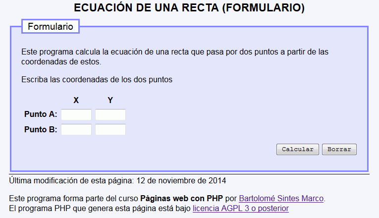
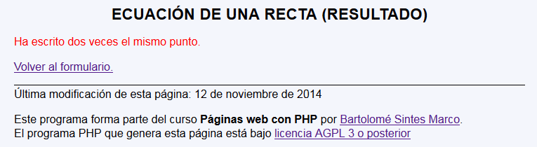
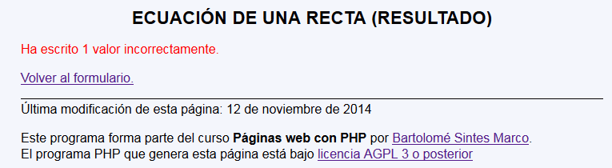
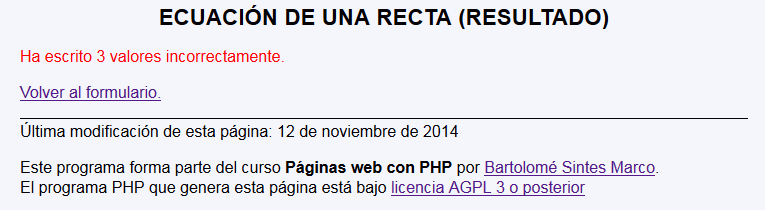
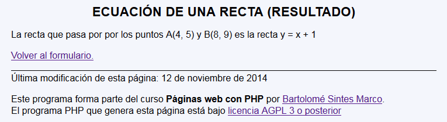
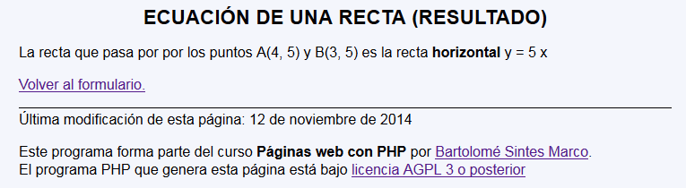
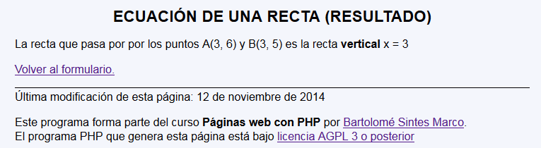

En este ejercicio se debe crear un programa que calcule la ecuación de una recta que pasa por dos puntos a partir de sus coordenadas.
Ecuación de una recta - Comentarios
El programa tendrá dos páginas:
La primera página pide las coordenadas de los dos puntos.

La segunda página comprueba primero los valores recibidos. Si no se han escrito dos puntos iguales o hay valores que no son números se muestra un mensaje de error:



En el caso de que los valores sean correctos, la segunda página muestra el cuarto valor (si se puede calcular) o dice que no se puede calcular.



y = a x + b
a = (y2 - y1) / (x2 - x1)
b = (y1 * x2 - x1 * y2) / (x2 - x1)
Casos particulares:
y1 = y2 : recta horizontal y = y1
x1 = x2 : recta vertical x = x1
si a o b no es entero, mostrar dos decimales
si a es 1, que no muestre a ( y = x ...)
si a es -1 que no muestre el 1 (y = - x ...)
si b es cero, que no se muestre
si b es negativo, que se vea así: y = ... x - ...
Ecuación de una recta - Ejemplo de código HTML
<h1>Ecuación de una recta (Resultado)</h1>
<p>La recta que pasa por por los puntos A(5, 6) y B(3, 4)
es la recta y = x + 1</p>
Ecuación de una recta - Ejemplo de programa
Nota: El día del examen los alumnos no tienen acceso a este ejemplo, solamente tienen acceso a las capturas del apartado anterior.
Un ejemplo de programa puede probarse en la ventana siguiente: